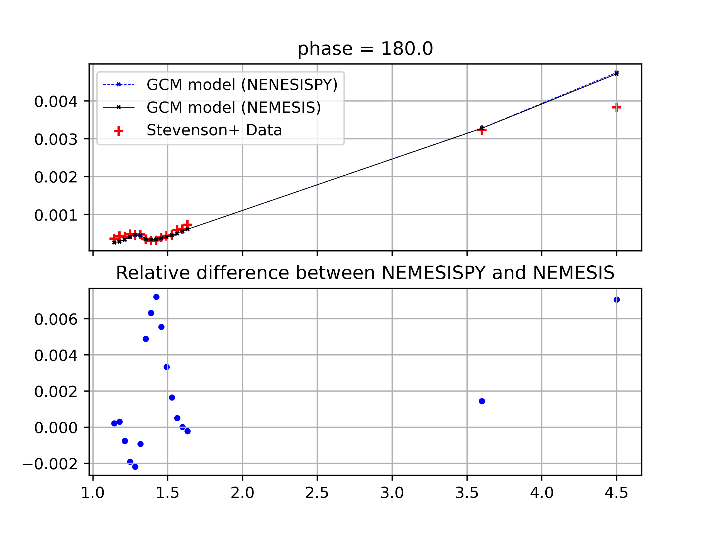

Tutorial¶
We provide some tutorials to help you get started with the code.
Hot Jupiter emission spectrum¶
Let’s start with a simple example: computing the emission spectrum of a hot Jupiter
from a given model atmosphere. The code for this tutorial is in the
examples/calculate_emission/calculate_emission.py.
Step 1: Import the necessary modules
Firstly, we import all the variables defined in the nemesispy.common.constants.
The nemesispy.common.constants module contains all the constants that are used
in NEMESISPY. You should check the module to see all the available constants
and take care not to redefine them.
import matplotlib.pyplot as plt
import numpy as np
from nemesispy.common.constants import *
Next, we import the opacity date file paths from nemesispy.data.helper.
We import a list of low resolution k-tables in lowres_file_paths
and a CIA opacity data file.
It is entirely up to you to decide where to store the opacity data files,
as long as you provide the correct paths.
from nemesispy.data.helper import lowres_file_paths, cia_file_path
Now, we import key object of the NEMESISPY library, the ForwardModel class.
The ForwardModel object is the main interface object that you will
need to use the radiative transfer functionality of the NEMESISPY library, such as
computing emission spectra.
from nemesispy.radtran.forward_model import ForwardModel
Next, we import an atmopsheric model calculated using a general circulation model (GCM) for a hot Jupiter. This model is calculated using the setup of Parmentier et al. (2016) and used in the Irwin et al. (2020).
from nemesispy.data.gcm.process_gcm import tmap, vmrmap_mod
Here we import a temperature map tmap and a abundance map vmrmap_mod.
The temperature map is a 3D array with dimensions Nlon x Nlat x Nlayer,
where Nlon is the number of longitude points, Nlat is the number of latitude points,
and Nlayer is the number of layers in the GCM model.
The abundance map is a 4D array with dimensions Nlon x Nlat x Nlayer x Nspecies,
where Nspecies is the number of gas species in the atmosphere.
In this example, we have 6 gas species: H2O, CO, CO2, CH4, He, and H2.
The longitude, latitude and pressure grid of the GCM model is given by
xlon, xlat, pv
from nemesispy.data.gcm.process_gcm import xlon,xlat,pv
Finally, we import the observed phase resolved emission spectrum of WASP-43b published in Kevin Stevenson et al. 2017, and the emission spectrum calculated using the GCM model using NEMESIS in Patrick Irwin et al. 2020.
from nemesispy.data.gcm.process_gcm import kevin_phase_by_wave, pat_phase_by_wave
Step 2: Defining variables
# Wavelengths grid for the emission spectrum (microns)
wave_grid = np.array([1.1425, 1.1775, 1.2125, 1.2475, 1.2825, 1.3175, 1.3525,
1.3875, 1.4225, 1.4575, 1.4925, 1.5275, 1.5625, 1.5975, 1.6325, 3.6, 4.5])
nwave = len(wave_grid)
# Orbital phase grid (degree)
phase_grid = np.array([ 22.5, 45. , 67.5, 90. , 112.5, 135. , 157.5, 180. ,
202.5, 225. , 247.5, 270. , 292.5, 315. , 337.5])
nphase = len(phase_grid)
# WASP-43 stellar spectrum to convert flux to Fp/Fs
wasp43_spec = np.array(
[3.341320e+25, 3.215455e+25, 3.101460e+25, 2.987110e+25,
2.843440e+25, 2.738320e+25, 2.679875e+25, 2.598525e+25,
2.505735e+25, 2.452230e+25, 2.391140e+25, 2.345905e+25,
2.283720e+25, 2.203690e+25, 2.136015e+25, 1.234010e+24,
4.422200e+23]
)
# Pick resolution for the disc average
nmu = 5 # Number of mu bins
# Reference planetary parameters
M_plt = 2.034 * M_JUP # kg
R_plt = 1.036 * R_JUP_E # m
# List of gas species to include in the model using identifiers
gas_id = np.array([1, 2, 5, 6, 40, 39]) # H2O, CO2, CO, CH4, H2, He
iso_id = np.array([0, 0, 0, 0, 0, 0]) # Isotopologue identifier
# Define the atmospheric model
NLAYER = 40 # Number of layers
top_pressure = 100 # Top pressure in Pa
botttom_pressure = 20e5 # Bottom pressure in Pa
P_model = np.geomspace(botttom_pressure,top_pressure,NLAYER) # Pressure grid in Pa
Step 3: Setting up the ForwardModel object
# Create a ForwardModel object
FM = ForwardModel()
FM.set_planet_model(
M_plt=M_plt,R_plt=R_plt,
gas_id_list=gas_id,iso_id_list=iso_id,
NLAYER=NLAYER
)
FM.set_opacity_data(
kta_file_paths=lowres_file_paths,
cia_file_path=cia_file_path
)
Step 4: Computing the emission spectrum
# Pick an orbital phase
phasenumber = 7 # secondary eclipse
phase = phase_grid[phasenumber]
one_phase = FM.calc_disc_spectrum(phase=phase, nmu=nmu, P_model = P_model,
global_model_P_grid=pv,
global_T_model=tmap, global_VMR_model=vmrmap_mod,
mod_lon=xlon,
mod_lat=xlat,
solspec=wasp43_spec)
You should get the following results, which is list of flux ratios (planetery flux dividd by steller flux) at each wavelength.
[0.00026323, 0.00028751, 0.00033877, 0.00040943, 0.00046332, 0.00044917,
0.00035036, 0.00034237, 0.00034749, 0.00037085, 0.00040751, 0.0004533,
0.00050714, 0.00056521, 0.00061118, 0.00328166, 0.00474654]
We can plot the results using the following code. We compare the emission spectrum calculated using the GCM model by NEMESISPY with the emission spectrum calculated using the GCM model by NEMESIS in Patrick Irwin et al. 2020., and the observed data from Kevin Stevenson et al. 2017.
fig, axs = plt.subplots(nrows=2,ncols=1,sharex=True,
dpi=200)
axs[0].set_title('phase = {}'.format(phase))
axs[0].plot(wave_grid,one_phase,color='b',
linewidth=0.5,linestyle='--',
marker='x',markersize=2,label='GCM model (NEMESISPY)')
axs[0].plot(wave_grid,pat_phase_by_wave[phasenumber],color='k',
linewidth=0.5,linestyle='-',
marker='x',markersize=2,label='GCM model (NEMESIS)')
axs[0].scatter(
wave_grid,kevin_phase_by_wave[phasenumber,:,0],
color='r',marker='+',label='Stevenson+ Data')
axs[0].legend()
axs[0].grid()
axs[1].set_title('Relative difference between NemesiPy and NEMESIS')
diff = (one_phase - pat_phase_by_wave[phasenumber,:])/one_phase
axs[1].scatter(wave_grid,diff,marker='.',color='b')
axs[1].grid()
plt.savefig('emission_example.pdf')
Here is what you should get. We first note that the GCM spectrum calculated with the NEMESISPY code agrees well with the GCM spectrum calculated with the reference Fortran NEMESIS code (the relative difference is within 1%). We also see that while the GCM spectrum does not perfectly match the observed data, it does reproduce the general features of the observed secondary eclipse spectrum.
{kind=link}